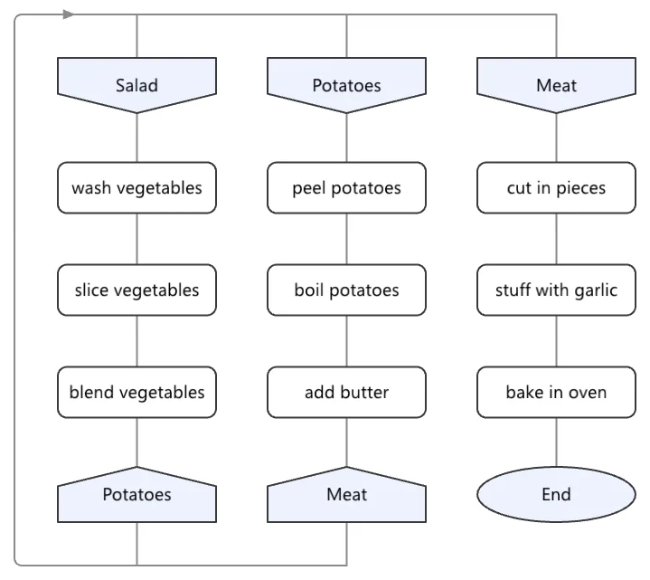

Les diagrammes dans Softanza sont le dessin de diagrammes à partir de graphes. Un graphe est un ensemble de nœuds (les choses) et d'arêtes (les liens entre elles). Un diagramme est un langage visuel et non une peinture : toute relation qu'un lecteur peut y voir doit être une relation que le graphe contient vraiment. De cette règle, Softanza a un seul moteur de rendu et vingt-cinq notations par-dessus. Une notation est l'ensemble des formes et des règles d'une sorte de diagramme.
Les notations comprennent les organigrammes de programmation, DRAKON, BPMN, UML, les automates, les organigrammes d'entreprise, Gantt, ER (entité-association), les réseaux de Petri, les arbres de défaillances, les arbres généalogiques, les chronologies, les diagrammes en arêtes de poisson, les circuits électriques, les plans de sol, les molécules et les figures mathématiques. Chacune est un profil déclaré comme donnée sur le même socle de dessin, et jamais un moteur à part, parce qu'un moteur dupliqué est un jour arrivé cassé. Une notation déclarée sans boucles sur soi (des liens d'un nœud vers lui-même) fait refuser une telle boucle à l'éditeur, bien qu'aucun code d'éditeur ne mentionne cette notation. L'auteur édite le sens, et la mise en page possède toute la géométrie. Déplacer une boîte ne fait que suggérer un ordre, parce qu'une position placée à la main affirme quelque chose que le graphe ne peut pas soutenir. L'exemple ci-dessous crée un organigramme de trois nœuds reliés par deux arêtes. Il indique 3 nœuds, une mise en page de haut en bas et la notation par défaut, et vérifie que l'image vectorielle SVG peut être produite sans aucun périphérique.
o1 = new stzDiagram("flow")
o1 {
AddNode("start")
AddNode("check")
AddNode("done")
AddEdge("start", "check")
AddEdge("check", "done")
}
# a diagram is a graph, so it answers like one
? o1.NumberOfNodes()
#--> 3
# and it knows how it will be drawn
? o1.Layout()
#--> topdown
? o1.Notation()
#--> default
# the picture is vector, and needs no device
? StzFindFirst("<svg", o1.ToSVG()) > 0
#--> TRUE
exécuté dans la bibliothèque le 2026-10-20
La mise en page est déterministe par garantie, c'est-à-dire que le même graphe donne toujours la même image. Elle utilise la chaîne classique par couches, qui range les nœuds en rangées, avec une réduction des croisements qui n'abîme jamais une image, et des positions résolues exactement par régression isotonique. Les résultats sont identiques au bit près d'un processus à l'autre, si bien qu'un test peut comparer une image octet par octet. Les diagrammes mathématiques et moléculaires sont résolus et non placés. Leur mise en page est un système de contraintes minimisé par la différentiation automatique du moteur lui-même, et résolu de nouveau autour d'une forme que l'on épingle ou déplace. Dessous, il y a un moteur de graphes compilé au niveau du cœur de NetworkX, une bibliothèque Python de graphes : plus courts chemins, composantes, centralités, PageRank, Louvain (regrouper les nœuds en communautés) et flot maximal.
L'ancienne dépendance à dot.exe, le programme de mise en page de Graphviz, est maintenant une visionneuse optionnelle. Ce qui manque encore, c'est la mise en page des grands graphes quelconques, le tracé en splines (liens courbes) et les grappes imbriquées, et le Compas le nomme en premier. Manquent aussi l'interaction en direct, qui revient au plan des interfaces, et une longue traîne d'utilitaires : générateurs, tests d'isomorphisme (vérifier si deux graphes ont la même structure) et sortie PDF. Quatre couloirs (sous-domaines) sont notés Strong et cinq Solid, avec environ 1 790 assertions derrière. Utilisez Graphviz pour les grands graphes quelconques.

un diagramme DRAKON du catalogue : préparer le déjeuner. rendu par le garde gg_drakon_catalogue de la bibliothèque et commis avec lui à 0e72e2e2c sous le nom cat_14_cook_lunch.png · la source(s'ouvre dans un nouvel onglet)
Où il en est
La lecture du Compas Softanza : chaque couloir du domaine noté face au meilleur de sa catégorie, d'après ce que les gardes prouvent (Read from the source on 2026-09-16, from a read-only main worktree). Les phrases du Compas sont en anglais, telles qu'il les a écrites.
One of the most complete planes in the library: 25 notations — flowchart, DRAKON, BPMN, UML, Petri nets, fault trees, ER, Gantt, fishbone, molecules, choropleths — all rendered by one engine, over a native deterministic layout engine and a NetworkX-tier graph-algorithm suite (Dijkstra, A*, SCC, betweenness, PageRank, Louvain, max-flow). Math and molecule diagrams are genuinely constraint-solved via autodiff, not merely placed. And a fact correction the code forced: the old dot.exe dependency is demoted to an optional viewer — diagram layout is now engine-native. Guarded by ~1,790 assertions.
The honesty line on the ratings. Re-surveyed from main (the session's working branch was stale), and one memory claim was corrected against code: force/hierarchical layout no longer shells out to dot.exe for the diagram plane — it runs in graph_layout.zig; dot survives only as an optional viewer and as the not-yet-met kill criterion for general graph layout. The guards are heavy: ~1,790 chk/chkeq assertions in the adversarial gate discharging 76 plan items, a determinism guard proving bit-identical layout, and 158 algorithm test files. No #ERR/#SKIP.
The one-sentence position. Softanza diagramming is a genuine two-world standout — a 25-notation renderer with Mermaid-plus breadth and a NetworkX-tier graph engine under it, with constraint-solved layout no competitor offers — and its remaining distance is the polish of general large-graph layout (edge splines, clusters), the utility long tail (generators, isomorphism, PDF), and live interaction, which is the GUI plane's to add.
Ce qu'un artisan en fait, et ce qui se distingue
25 notations as data profiles over one renderer
determinism as a guarantee: bit-identical layout across processes
constraint-solved layout via autodiff, which no mainstream tool does
NetworkX-core parity, compiled
Ce qui est dû
meet the dot kill criterion (spline routing, nested clusters)
live interactivity via the GUI plane
graph generators & isomorphism
PDF / PostScript export
Repensé depuis les premiers principes
Ce que Softanza a gardé de ce qui marche, et ce qu'elle a repensé, tel que la bibliothèque l'a écrit dans ses documents de conception et ses narrations.
La manière SoftanzaUn diagramme est un langage visuel, pas une peinture : toute relation que le lecteur y perçoit doit exister dans le graphe.
Gardé des meilleures pratiques
Les dessins en couches suivent la chaîne classique de Sugiyama : couches, nœuds relais sur les longues arêtes, réduction des croisements, coordonnées, puis tracé des liens. source(s'ouvre dans un nouvel onglet)
Le modèle de Graphviz est conservé : l'espacement entre les nœuds fait contrat, et la taille de l'image découle de son contenu, pas l'inverse. source(s'ouvre dans un nouvel onglet)
Les diagrammes mathématiques reprennent le découpage de Penrose : un domaine déclare les types, une substance énonce le contenu, un style le traduit en formes, et une optimisation trouve la disposition. source(s'ouvre dans un nouvel onglet)
Repensé
L'auteur modifie le sens, l'algorithme gère la géométrie. Déplacer une boîte suggère seulement un ordre, car une position choisie à la main affirmerait ce que le graphe ignore. source(s'ouvre dans un nouvel onglet)
BPMN, UML, machines à états et circuits sont des profils déclarés sur une seule base de dessin, jamais des moteurs à part : un moteur dupliqué était arrivé défectueux. source(s'ouvre dans un nouvel onglet)
Les positions dans une couche sont calculées exactement, par régression isotonique, et non par une heuristique de médiane. Toute disposition est déterministe : un test peut vérifier l'image octet par octet. source(s'ouvre dans un nouvel onglet)
Deux liens ne peuvent se superposer que là où ils partagent une extrémité, car le lecteur voit dans des traits fusionnés une relation que le graphe n'a peut-être pas. source(s'ouvre dans un nouvel onglet)
La manière Softanza, exécutée
Ce que Softanza fait autrement dans ce domaine, montré par du code tiré de ses narrations et de ses gardes, et exécuté pour cette page.
Une notation déclarée qui interdit les boucles sur soi fait refuser ce lien par l'éditeur, sans qu'aucun code de l'éditeur la connaisse ; un lien licite passe.
Softanza
# a notation declared as data: three kinds, a closed vocabulary, and no self-links
oFsm = new stzNotation("fsm51")
oFsm.AddKind("state", "circle")
oFsm.AddKind("final", "doublecircle")
oFsm.AddKind("task", "diamond")
oFsm.Close()
oFsm.Forbid(:SelfLink, "a state cannot transition to itself in fsm51; " +
"model a stay as a guard on departure instead")
StzRegisterNotation(oFsm)
oDm = new stzDiagram("m51")
oDm.SetNotation("fsm51")
oDm.AddNodeXTT("a", "A", [ :type = "state" ])
oDm.AddNodeXTT("b", "B", [ :type = "task" ])
oDm.AddEdge("a", "b")
oDm.ToCanvasXT([ :NodeWidth = 96, :NodeHeight = 36 ])
nDnLog = len(oDm.EditLog())
bDnGot = oDm.Edit(:Link, [ "a", "a" ])
chk("a link the domain forbids is refused at the command",
bDnGot = 0 and len(oDm.EditLog()) = nDnLog)
bDnGot = oDm.Edit(:Link, [ "b", "a" ])
chk("...while a lawful link passes the same gate",
bDnGot = 1 and len(oDm.EditLog()) = nDnLog + 1)
Sortie
ok a link the domain forbids is refused at the command
ok ...while a lawful link passes the same gate
12 couloirs, chacun face au meilleur de sa catégorie
Pour chaque couloir : ce qui tourne dans le moteur aujourd'hui, les outils contre lesquels il est juste de le mesurer, et ce qui reste dû.
01Notation breadthStrong
In the engine
25 notations (DN0–DN24), ~21 Haro faces — flowchart, org chart, workflow/statechart, BPMN, UML, electric, DRAKON, math, storyboard, molecule, Gantt, ER, Petri, fault tree, family tree, timeline, fishbone, network, floor plan, seating, choropleth — all as profiles over one renderer (stzDiagram), not separate tools.
Measured against
MermaidPlantUMLD2Graphviz
To complete
A catalogue that rivals or exceeds Mermaid's, and the "one renderer, notations as data profiles" architecture is distinctive. The domain list is closed by design.
02Deterministic layout engineStrong
In the engine
graph_layout.zig (GG1): barycentre crossing-reduction (best-keeping — "never makes a picture worse", total-order tiebreak), seeded Fruchterman-Reingold force, coordinate placement and alignment relaxation — bit-identical within and across processes, proven by a determinism guard.
Measured against
Graphviz (dot / neato / fdp)ELK / dagreD2 layouts
To complete
A native, deterministic layout engine — determinism as a guarantee (Graphviz is not bit-stable) is a real distinction. Edge-routing quality for hard graphs is the frontier (lane 10).
At NetworkX-core parity for traversal, shortest-path, centrality, components and flow — and compiled, so faster than NetworkX's Python. The long tail (generators, isomorphism) is lane 11.
04Constraint-solved diagramsStrong
In the engine
Math (DN7) and molecule (DN11) diagrams are genuinely solved, not placed — the layout is a system of constraints minimized by the engine's autodiff solver (StzEngineGrad*), with interactive re-solve: DragTo / Pin re-minimize around a held shape.
Measured against
TikZ / constraint layoutGraphviz (places, not solves)D2
To complete
No mainstream diagramming tool solves layout as an optimization problem with a real gradient. Distinctive; the reach is extending it to more notations (lane note in Tier C).
05Rendering & outputSolid
In the engine
One renderer, three outputs: ToSVG() (vector, no device), ToPNG() (GPU-backed), and an ASCII visualizer; 24 node shapes; plus DOT-source export. "Needs no GPU and no graphviz" for the SVG floor.
Measured against
Graphviz (PDF/PS/PNG/SVG)Mermaid (SVG)D2
To complete
No PDF / PostScript export (Graphviz's publication formats), and PNG needs a GPU device. SVG + ASCII + DOT cover most needs; the print formats do not ship.
06Diagram editing & interactivitySolid
In the engine
A command-based editing session: Edit, Undo/Redo, EditLog, PickAt(x,y), RewireAnchor — undoable commands, not raw mutation, with illegal edits refused at the gesture by the notation's own rules.
Measured against
draw.iotldrawMermaid Live
To complete
A programmable, governed edit API — but not a visual WYSIWYG node editor (explicitly out of scope), and live pan/zoom belongs to the GUI plane (lane 12).
07Graph rules & governanceSolid
In the engine
stzGraphRule and stzOrgRule feed the one CI gate (stzRuleReport, unified finding shape), with concrete rules like no-orphan-position and separation-of-duties (approver ≠ executor) — a diagram that can check its own structure.
Measured against
architecture linters(no direct peer)
To complete
A distinctive graph-governance layer, shared with the security/code-rule domains — but the shipped rule catalogue is small. Room for a real structure-linting library on top.
08Export & interchangeSolid
In the engine
stzGraph exports DOT, JSON, GraphML and YAML (Dot(), RenditionAs), emitting standard graph-interchange text for other tools.
Measured against
NetworkX (many formats)Graphviz DOTGephi / GEXF
To complete
Good export breadth; import parity is thinner, and GEXF / Pajel / adjacency-matrix round-trips aren't all present. Export-strong, import-lighter.
09Text & label placementSolid
In the engine
Dedicated label discipline: notation-in-a-label (DN10), labels centred on cap-height not the em-box (DN12), curve clearance (DN13), and solver-placed labels (SolveLabelsAfter) on the constrained diagrams.
Measured against
Graphviz labelsD2TikZ
To complete
Careful, typographically-correct label placement most tools approximate — a genuine strength narrowed only by being tied to the notations that use it, not a general label-layout service.
10General graph layout & edge routingPartial
In the engine
For the diagram notations, hierarchical and force layout are engine-native. For arbitrary large-graph visualization, stzGraph emits DOT and offers an optional dot.exe viewer (Display()).
Measured against
Graphviz (splines / clusters)ELK / OGDFyFiles
To complete
The native engine hasn't met the "dot kill criterion": spline edge routing and nested-cluster layout, where dot still wins. General graph visualization therefore still leans on the external viewer — the one runtime dependency left.
11Graph generators & isomorphismPartial
In the engine
The analysis core is deep, but the surrounding utilities NetworkX bundles are thin: no standard graph generators (Erdős-Rényi, Barabási-Albert, Watts-Strogatz) and no isomorphism / graph-edit-distance surfaced.
Measured against
NetworkX generatorsigraphgraph-tool
To complete
Random-graph generators for testing/benchmarking and (sub)graph isomorphism / matching — the utility long tail that rounds out a graph-analysis library beyond the algorithm core.
12Live / web interactivityPartial
In the engine
Diagrams emit interactive SVG (ids / classes / titles) and support programmatic re-layout (Relayout, DragTo re-solves), so a host can wire hover and selection.
Measured against
Cytoscape.jsD3 force (live)Mermaid
To complete
No built-in live pan / zoom / brush — that is the GUI plane's reactive layer over these hooks, not the diagram module's own. Interaction stops at the SVG contract.
Ce qui est dû, dans l'ordre du rendement
Les manques, classés par ce qu'ils rapportent et non par leur taille ; la valeur est l'effet sur la portée de la bibliothèque, l'effort une lecture d'ingénieur.
Tier A — retire the last dependency
Meet the dot kill criterion
Native spline edge routing and nested-cluster layout for general graphs, so arbitrary stzGraph visualization no longer needs the dot.exe viewer at all. It is the single external runtime dependency left, and the plan already scopes its retirement.
Valeur · élevéeEffort · élevé
Live interactivity via the GUI plane
Pan / zoom / brush on the interactive-SVG hooks the diagrams already emit — wiring the reactive GUI layer to the diagram contract turns strong static pictures into explorable ones.
Valeur · élevéeEffort · moyen
Tier B — reach & utility breadth
Graph generators & isomorphism
Erdős-Rényi / Barabási-Albert / Watts-Strogatz generators and (sub)graph isomorphism / edit distance — the NetworkX utilities that make the strong algorithm core a complete analysis library.
Valeur · moyenneEffort · moyen
PDF / PostScript export
An SVG→PDF/PS path for publication, the one output family Graphviz has and this renderer does not. Small over the existing vector renderer, high value for print/paper figures.
Valeur · moyenneEffort · faible
Import parity
Round-trip the interchange formats it exports (GraphML / GEXF / adjacency), so graphs authored elsewhere load cleanly, not just export out.
Valeur · moyenneEffort · moyen
Tier C — editing & analysis depth
A visual node editor
WYSIWYG editing over the command-based edit session (currently out of scope). It would make the governed edit API a draw.io-class tool while keeping the "illegal edits refused at the gesture" guarantee.
Valeur · moyenneEffort · élevé
Extend constraint-solving to more notations
The autodiff solver that lays out math and molecule diagrams could place other notations where a constraint model beats a heuristic — turning "solved" from two notations into a general option.
Valeur · moyenneEffort · moyen
A real structure-governance catalogue
Grow stzGraphRule / stzOrgRule from a few rules into a broad architecture / process-linting set feeding the one CI gate — the governance the plane's rule seam is built for.
Valeur · moyenneEffort · moyen
La conception, telle que la bibliothèque l'a écrite (3)
Les documents de conception de ce domaine, lus dans le dépôt au commit 4a184e6f0 : ce que chacun est, son plan, et le lien vers le texte entier.
SOFTANZA GRAPH-ORIENTED GRAPHICS — plan of record (GG0–GG5)
5 220 lignes · 55 sections · écrit le 2026-08-09, revu le 2026-09-14
Plan de référence des graphiques orientés graphe (GG0 à GG5, puis les phases DN) : le graphe est sémantique, non syntaxe, donc une seule primitive, la propagation sur un DAG résident, sert disposition, scène, trame et matériau ; sa table d'état vient de la suite de garde.
Le plan
0. The thesis, in one sentence
1. What already exists (surveyed, not assumed)
STATUS OF EVERY ITEM, GENERATED FROM THE SUITE
2. Phases
The plan that contradicted itself, and the checker that could not say so (2026-09-08)
3. What is refused, and why
4. Risks, named now
GG1 SLICE 0 — DETERMINISM AND CONVERGENCE, MEASURED FIRST. VERDICT: GO
stzGraph: A Design Foundation for Connected Domains
1 110 lignes · 9 sections · écrit le 2025-10-19
Essai de conception présentant stzGraph comme colonne vertébrale architecturale de Softanza : la structure est séparée de la sémantique, chaque domaine (code, flux, automates, connaissance, modèles de données, langage naturel) est une classe héritant du graphe, et les motifs trouvés dans un domaine reviennent au cœur.
Le plan
Introduction
Part 1: The Core Insight — All Domains Are Graphs
Part 2: The Layered Ecosystem
Part 3: The Multi-Layered Orchestrator — stzNaturalLanguage
Part 4: Universal Patterns and Core Enhancement
Part 5: The Integration Challenge — Making Layers Work Together
Part 6: Real-World Scenarios — How It All Comes Together
357 lignes · 9 sections · écrit le 2026-07-23, revu le 2026-07-24
Plan, marqué complet (phases 1 à 7 et 2b construites), pour un moteur de règles unique sur tout objet-graphe : une règle s'attache au graphe et se vérifie depuis lui, stzCodeRule est la première instance, et code, agents, sécurité et flux rapportent par une porte.
Le plan
1. The thesis
2. Ground truth (verified)
3. The decision
4. What SECURITY gains
5. What AGENTS gain
6. Every graph-shaped object, and the rules it wants
Les narrations que la bibliothèque a écrites sur ce domaine, chacune exécutée bloc par bloc avant d'être publiée ici.
Graphviz DOT Language Guide: Using stzDotCode2025 · tutorialGraphviz has been integrated into the Softanza ExerCode framework to provide a powerful, code-driven approach to creating professional diagrams.
stzGraph: Computational Foundation and Design2025 · paradigm essaystzGraph separates structure (how things connect) from semantics (what connections mean). This single decision enables reuse across workflows, org hierarchies, data flows, service maps, and language models.
stzGraph: The Art of Connected Thinking2025 · tutorialA graph is an elegant yet profound concept in computer science—a structure of nodes (entities) and edges (relationships) that illuminates how systems connect, interact, and evolve.
stzGraph — Modeling Knowledge Through Structure2025 · feature essaySoftware systems today are built on relationships: microservices depend on one another, workflows move across steps, configurations link modules to environments, and business rules weave threads between entities that must interact correctly.
Introducing stzOrgChart - The Strategic Organizational Intelligence Platform2025 · tutorialIn Softanza, understanding organizational structure transcends simple box-and-line diagrams. Organizations need dynamic tools that can model, analyze, and visualize their human infrastructure with precision and depth.
Organizational Intelligence in Action2025 · use caseThis article follows a real-world journey at a Softabank (Virtual bank name, BCEAO-regulated). We deliberately start with a realistically flawed, non-compliant structure — exactly what you often inherit in practice — then use stzOrgChart’s intelligence laye...
ClaudeAI Opinion on stzGraph design2025 · comparisonI shared the full codebase of the stzGraph module (across several classes) with ClaudeAI and asked for an entirely objective assessment.
Softanza stzGraph vs. Modern Graph Ecosystem2025 · comparisonThe rule system is particularly innovative - rules are first-class citizens that can be stored, versioned, and applied dynamically.
Intelligence in Motion: Graph Planning in Softanza2025 · tutorialSoftanza's Graph Module already gives you powerful tools for representing connected systems. With stzGraph, you model networks of nodes and edges. With stzDiagram, you visualize relationships.
stzGraphQuery: Asking Questions to Your Graph2026 · tutorialWhen working with graphs, a moment inevitably arrives when the graph stops being just a structure of nodes and edges and starts becoming a world you want to explore.
Rules That See the Whole Picture2026 · paradigm essaySoftanza used to check its house rules with a text scanner: read the source line by line, and if a line looks like def len(, complain. That is a grep with a nicer return type.
Les classes de ce domaine (72)
Chaque classe mène à sa page de référence : ses méthodes, chacune avec un exemple exécuté.